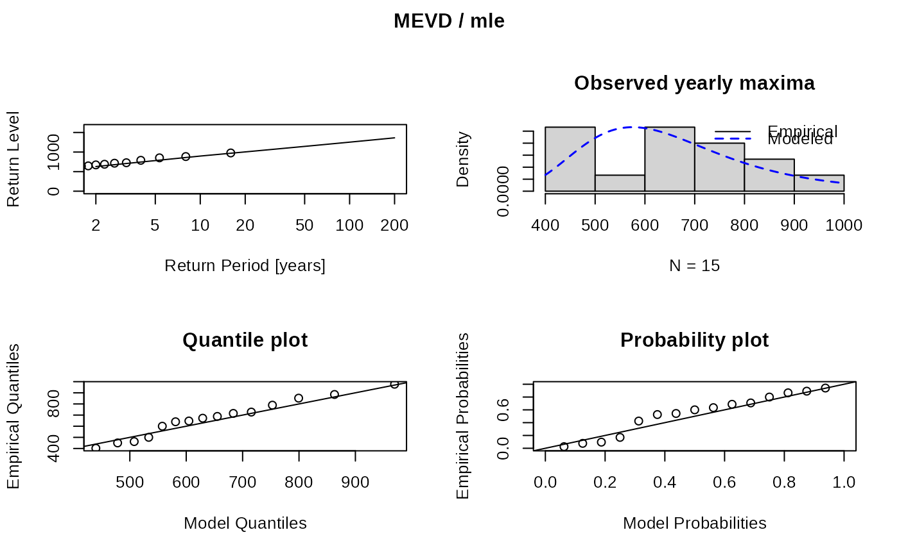

fmev.RdFit the MEVD distribution to rainfall observations with different estimation methods.
fmev(data, threshold = 0, method = c("pwm", "mle", "ls"))The data to which the MEVD should be fitted to. data must be a data.frame with two columns.
The first column must contain dates of class Date, the second or last column must contain the rainfall
values corresponding to datums in the rows. No NA values are allowed.
A numeric that is used to define wet days as values > threshold. \(data <= threshold\) is set to NA.
Character string describing the method that is used to estimate the
Weibull parameters c and w. Possible options are probability weighted moments (method='pwm'),
maximum likelihood (method='mle') or least squares (method='ls').
The default is pwm. (see details).
A list of class mevr with the fitted Weibull parameters and other helpful ingredients.
vector of Weibull scale parameters of the MEVD, each component refers to one year.
vector of Weibull shape parameters of the MEVD, each component refers to one year.
Number of wet events per year. Wet events are defined as rainfall > threshold.
A named vector of the fitted parameters.
Maximum values corresponding to each year.
\(data >= threshold\) used to fit the MEVD and additional components which may be useful for further analysis.
Vector of years as YYYY.
The chosen threshold.
Method used to fit the MEVD.
The type of distribution ("MEVD")
With the aim of weakening the requirement of an asymptotic assumption for the GEV distribution, a metastatistical approach was proposed by Marani and Ignaccolo (2015). The MEVD is defined in terms of the distribution of the statistical parameters describing "ordinary" daily rainfall occurrence and intensity. The MEVD accounts for the random process of event occurrence in each block and the possibly changing probability distribution of event magnitudes across different blocks, by recognizing the number of events in each block, n, and the values of the shape and scale parameters w and C of the parent Weibull distribution to be realisations of stochastic variables. The MEVD can then be written as
$$F = \frac{1}{T} \sum_{j=1}^T \prod_{k \in A_j} \left( 1-e^{-\left(\frac{x}{C(j,k)}\right)^{w(j,k)}} \right)$$
for \(w > 0\) and \(C > 0\). With T fully recorded years, yearly C and w can be estimated by fitting a Weibull distribution to the values x of this year, and n is the number of ordinary events per year, i.e. all rainfall events larger than a threshold.
If the probability distribution of daily rainfall is assumed to be time-invariant, the MEVD can be simplified to
$$F = [1 - exp(-x/C)^w]^n$$
with single values for the shape and scale parameters w and C. n is then the mean number of wet days at this location (Marra et al., 2019; Schellander et al., 2019).
As is shown e.g. Schellander et al., 2019, probability weighted moments should be preferred
over maximum likelihood for the estimation of the Weibull parameters w and C.
Therefore method = 'pwm' is the default.
The MEVD can also be used for sub-daily precipitation (Marra et al., 2019). In that case n has to be adapted accordingly to the 'mean number of wet events' per year.
Marani, M. and Ignaccolo, M. (2015) 'A metastatistical approach to rainfall extremes', Advances in Water Resources. Elsevier Ltd, 79(Supplement C), pp. 121-126. doi: 10.1016/j.advwatres.2015.03.001.
Schellander, H., Lieb, A. and Hell, T. (2019) 'Error Structure of Metastatistical and Generalized Extreme Value Distributions for Modeling Extreme Rainfall in Austria', Earth and Space Science, 6, pp. 1616-1632. doi: 10.1029/2019ea000557.
data(dailyrainfall)
fit <- fmev(dailyrainfall, method = "mle")
fit
#> MEVD fitting
#>
#> Type: MEVD
#> Estimator: mle
#>
#> Parameters:
#> Scale C:
#> [1] 75.30 85.50 83.66 111.86 83.06 110.43 91.39 78.56 90.65
#> [10] 84.84 100.45 77.33 105.16 90.53 89.29
#>
#> Shape w:
#> [1] 0.8109 0.9163 0.8648 0.9482 0.8515 0.9411 0.8937 0.8472 0.8564
#> [10] 0.9128 0.9329 0.8363 0.8421 0.9537 0.8436
#>
#> Wet days n:
#> [1] 151 148 187 190 169 157 185 193 202 211 202 176 169 170 178
#>
#> Years:
#> [1] 15
#>
#> Threshold:
#> [1] 0
plot(fit)
